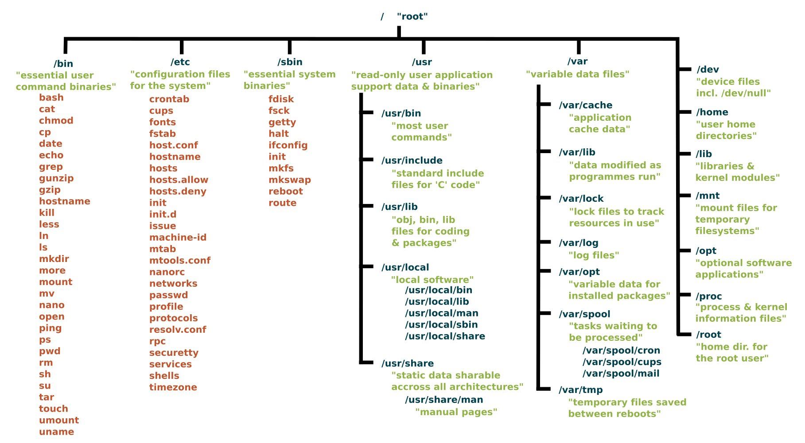

Linux 系统目录结构
目录
要点: 文件系统和系统目录。
linux 系统目录结构
单击在新窗口打开：
/ 下级目录结构 bin (binaries)存放二进制可执行文件 sbin (super user binaries)存放二进制可执行文件，只有root才能访问 etc (etcetera)存放系统配置文件 usr (unix shared resources)用于存放共享的系统资源 home 存放用户文件的根目录 root 超级用户目录 dev (devices)用于存放设备文件 mnt (mount)系统管理员安装临时文件系统的安装点 lib (library)存放跟文件系统中的程序运行所需要的共享库及内核模块 boot 存放用于系统引导时使用的各种文件 tmp (temporary)用于存放各种临时文件 var (variable)用于存放运行时需要改变数据的文件
文件权限
$ ls -lth drwxrwxr-x 3 wangjl wangjl 4.0K Dec 16 21:03 clean_qc -rw-rw-r-- 1 wangjl wangjl 37K Dec 17 11:24 c12.bam 第一列是权限控制部分，共10个字符。 第一个是文件类型：-表示文件，d表示目录，l表示软链接。 2-4 位rwx所属用户权限，u(user) 5-7 位rwx所属组权限，g(group) 8-10位rwx其他用户权限，o(other) 2-10位，所有权限，a(all)
常用命令
$ sudo chown newUser path/to/dir/
挂载硬盘/格式化硬盘为ext4文件系统
使用场景：买了一块8T硬盘，想备份一下服务器中不常用的数据，怎么挂载该硬盘呢？
新买的硬盘一般是 windows 文件系统，不适合linux服务器。需要先确认没有重要数据，然后格式化为linux支持的格式。
1) 查看该硬件的位置
$ sudo fdisk -l
$ sudo fdisk -l | grep sdf -A10
$ sudo fdisk -l /dev/sdf
Disk /dev/sdf: 8001.6 GB, 8001562869760 bytes, 15628052480 sectors
Units = sectors of 1 * 512 = 512 bytes
Sector size (logical/physical): 512 bytes / 4096 bytes
I/O size (minimum/optimal): 4096 bytes / 4096 bytes
Disk label type: gpt
Disk identifier: 34CA04EB-FA9B-41E3-950B-87B6BFE8D6C1
# Start End Size Type Name
1 2048 15628050431 7.3T Microsoft basic My Book
2) 挂载前先看看该盘内的文件内容。
如果是linux文件系统，则可以直接挂载使用。
如果不是，则要格式化成 linux文件系统。
为了防止错误格式化，争取先看一下硬件中的内容。
先新建文件夹
$ sudo mkdir /mnt/data5
尝试挂载：提示文件系统未知，挂载失败。
$ sudo mount /dev/sdf1 /mnt/data5
mount: unknown filesystem type 'exfat'
那就格式化吧。
3) 转为linux文件分区
fdisk - manipulate disk partition table
$ sudo fdisk /dev/sdf
Command (m for help): m ##
Command action
d delete a partition
g create a new empty GPT partition table
G create an IRIX (SGI) partition table
l list known partition types
m print this menu
n add a new partition
o create a new empty DOS partition table
p print the partition table
q quit without saving changes
s create a new empty Sun disklabel
t change a partition's system id
v verify the partition table
w write table to disk and exit
x extra functionality (experts only)
Command (m for help): t ##
Selected partition 1
Partition type (type L to list all types): L ##
# 20 Linux filesystem 0FC63DAF-8483-4772-8E79-3D69D8477DE4
> 20
# Changed type of partition 'Microsoft basic data' to 'Linux filesystem'
> w
The partition table has been altered!
Calling ioctl() to re-read partition table.
Syncing disks.
查看硬盘
$ sudo fdisk -l | grep sdf -A10
Disk /dev/sdf: 8001.6 GB, 8001562869760 bytes, 15628052480 sectors
Units = sectors of 1 * 512 = 512 bytes
Sector size (logical/physical): 512 bytes / 4096 bytes
I/O size (minimum/optimal): 4096 bytes / 4096 bytes
Disk label type: gpt
Disk identifier: 34CA04EB-FA9B-41E3-950B-87B6BFE8D6C1
# Start End Size Type Name
1 2048 15628050431 7.3T Linux filesyste My Book
4) 格式化分区为Ext4
$ sudo mkfs.ext4 /dev/sdf1 #等待几秒
mke2fs 1.42.9 (28-Dec-2013)
Filesystem label=
OS type: Linux
Block size=4096 (log=2)
Fragment size=4096 (log=2)
Stride=0 blocks, Stripe width=0 blocks
244191232 inodes, 1953506048 blocks
97675302 blocks (5.00%) reserved for the super user
First data block=0
Maximum filesystem blocks=4102029312
59617 block groups
32768 blocks per group, 32768 fragments per group
4096 inodes per group
Superblock backups stored on blocks:
32768, 98304, 163840, 229376, 294912, 819200, 884736, 1605632, 2654208,
4096000, 7962624, 11239424, 20480000, 23887872, 71663616, 78675968,
102400000, 214990848, 512000000, 550731776, 644972544, 1934917632
Allocating group tables: done
Writing inode tables: done
Creating journal (32768 blocks): done
Writing superblocks and filesystem accounting information: done
5) 挂载硬盘到linux系统
$ sudo mount /dev/sdf1 /mnt/data5
发现新挂载的硬盘已经在了。
$ df -lh
Filesystem Size Used Avail Use% Mounted on
/dev/sdf1 7.3T 93M 6.9T 1% /mnt/data5
查看文件系统格式，在第二列。
$ df -lhT
Filesystem Type Size Used Avail Use% Mounted on
/dev/sdf1 ext4 7.3T 93M 6.9T 1% /mnt/data5
查看每个盘的分区
$ lsblk
NAME MAJ:MIN RM SIZE RO TYPE MOUNTPOINT
sdf 8:80 0 7.3T 0 disk
└─sdf1 8:81 0 7.3T 0 part /mnt/data5
最后设置系统启动时自动加载(可选)
# cat /etc/fstab
/dev/sdf1 /mnt/data5 ext4 defaults 1 2
6) 备份文件
先用sudo新建一个文件夹，改为该用户的权限。
假设用户名为 zzhan，
$ cd /mnt/data5
$ sudo mkdir zzhan_data
$ sudo chown zzhan zzhan_data
$ ls -lth
drwxr-xr-x. 3 zzhan root 4.0K Dec 2 16:04 zzhan_data
然后用户就可以登录拷贝数据了。
命令 cp
推荐命令 rsync
7) 卸载硬盘
$ sudo umount /mnt/data5
此时不能够在 /mnt/data5 目录下输入前面的卸载命令，否则系统会认为你的“设备忙”而拒绝卸载。
$ df -lhT
查看不到该硬件，即可安全拔掉该硬件。
shell 数组
常用循环结构。
xx
xx
code here;